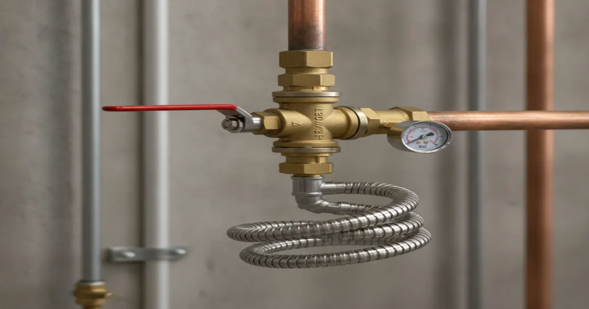
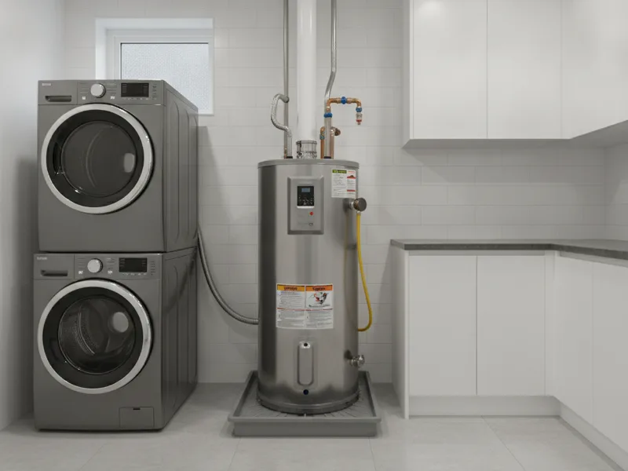
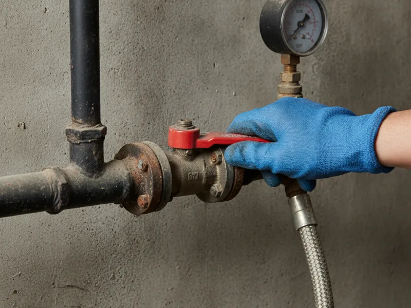

Gasfitter in Armonk, NY
Gas lines and gas appliances aren't a do-it-yourself project. Pete's Plumbing is a licensed, insured Westchester County plumber who handles gas line repair and gas water heater installation safely, and explains every step before we start.
- Licensed & Insured
- Westchester County Licensed Plumber
- Same-Day Service Available
- Upfront Pricing

Gas work we handle
Under our gasfitter services, we cover two main jobs for Armonk-area homes: diagnosing and repairing a gas line when something's wrong, and installing a new gas water heater when you're replacing an old unit or switching from electric.
Both jobs involve real safety considerations, so we don't treat them like routine plumbing calls. A licensed plumber checks connections, pressure, and ventilation, not just whether the pipe or appliance "works."
If you're not sure which service fits your situation, call us and describe what's going on. We'll point you in the right direction before you spend any money.

Why licensed gas work matters
Gas work is regulated for a good reason. A loose fitting, an undersized line, or a poorly vented appliance can turn into a real hazard — carbon monoxide, a slow leak, or worse. That's why gas work in New York requires a licensed professional, not a handyman fix.
Plumbing and mechanical codes for gas piping and appliance connections are developed and maintained by organizations like the International Association of Plumbing and Mechanical Officials, and following them isn't optional for us — it's how every gas job gets done, every time.
Being licensed and insured also means that if something does go wrong, you're protected. We carry that responsibility so you don't have to.
What to expect when you call
We start by asking what you're noticing — a smell, a pilot light that won't stay lit, an appliance that's not heating right, or just an old water heater you want replaced before it fails. That tells us what to bring and what to check first.
On site, we inspect the relevant line or connection, explain what we find in plain language, and give you upfront pricing before any work begins. No guessing, no surprise add-ons.
Once you approve the work, we complete it, test everything, and make sure gas is flowing safely before we leave.
Gas appliances and Westchester winters
Gas water heaters, furnaces, ranges, and even gas fireplaces get a real workout once the cold sets in across Armonk, Bedford, and the rest of our Westchester County service area. A gas appliance that's been running fine all fall can start acting up the first hard freeze — and a gas line issue is not something to leave until spring.
If you ever suspect a gas leak, that's an emergency, not a maintenance item. We provide urgent gas leak response service for exactly this kind of situation.
For everything else we do outside of gas work, take a look at the complete set of services we offer across Armonk.
When to call a pro
Call us if you smell gas (even faintly), notice a hissing sound near a gas line or meter, have a gas appliance that won't light or keeps going out, or you're planning to install or replace a gas water heater. None of these are things to troubleshoot yourself.
If you ever smell gas strongly, leave the house first and call your gas utility's emergency line or 911 before calling anyone else — safety comes before any repair.

Frequently asked questions
Is Pete's Plumbing licensed to do gas work in Westchester County?
Yes. We're a licensed and insured Westchester County plumber, and gas line and gas appliance work falls within that licensing.
What's the difference between a plumber and a gasfitter?
In most of Westchester County, a licensed plumber is qualified to handle gas line and gas appliance work — there isn't a separate gasfitter license here the way there is in some other regions. We list it as its own service because it's specialized work, not a different license.
Do you install gas ranges or gas fireplaces?
We handle gas line connections for these appliances. Call us to discuss your specific setup and we'll let you know exactly what's involved.
How do I know if my gas appliance is unsafe?
Warning signs include a pilot light that won't stay lit, a yellow or flickering flame instead of blue, soot around the appliance, or a faint gas smell. Any of these is worth a call.
Do you offer same-day gas line service?
We offer same-day appointments whenever possible, and treat any suspected gas leak as an emergency, not a scheduling item.
Can you convert my appliance from electric to gas?
For water heaters, yes — we handle the gas line and connection work involved. Call us to talk through what a switch would require for your home.